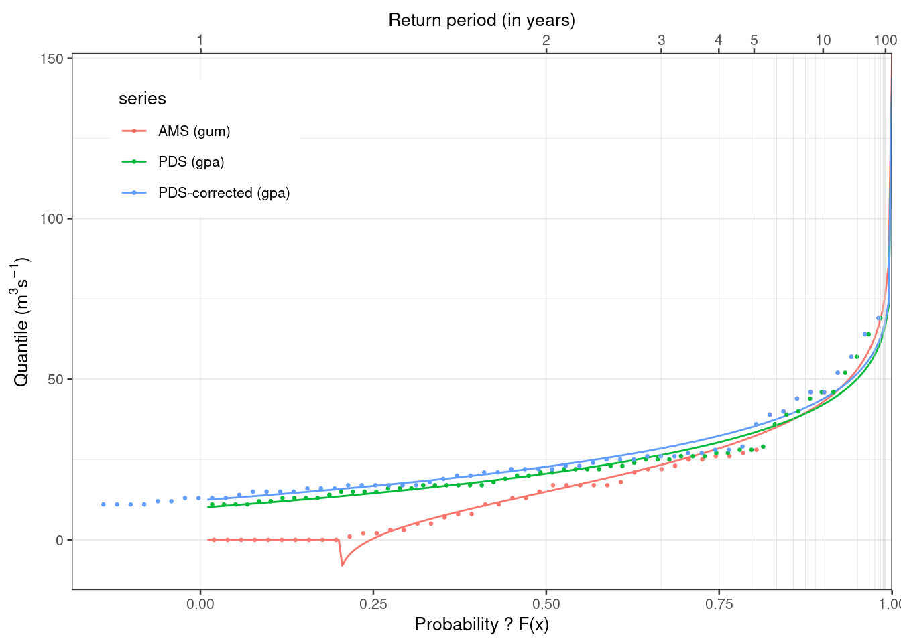
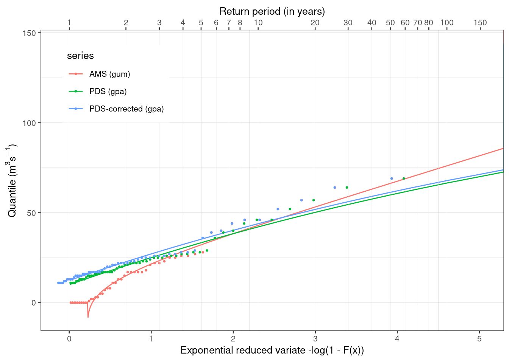

1 Data
library(tidyverse)
library(hydroDrought)
library(lubridate)
ngaruroro <- intl %>%
filter(river == "Ngaruroro") %>%
select(data) %>%
unnest(data) %>%
# fill gaps with a length of up to 15 days
sanitize_ts(approx.missing = 15) %>%
mutate(
year = water_year(time, origin = "-09-01")
) # remove incomplete years
coverage <- ngaruroro %>%
filter(!is.na(discharge)) %>%
pull(time) %>%
coverage_yearly(origin = "-09-01")
incomplete <- coverage %>%
filter(days.missing > 0) %>%
print()## # A tibble: 7 x 5
## year days.with.data days.in.year days.missing coverage
## <dbl> <int> <int> <int> <dbl>
## 1 1963 347 366 19 0.948
## 2 1965 294 365 71 0.805
## 3 1978 305 365 60 0.836
## 4 1986 341 365 24 0.934
## 5 1987 336 366 30 0.918
## 6 2001 344 365 21 0.942
## 7 2019 38 366 328 0.104complete <- coverage %>%
filter(days.missing == 0)
ngaruroro <- ngaruroro %>%
anti_join(incomplete, by = "year")Drought events were selected for River Ngaruroro and details of the selection criteria are given in Worked Example 5.4. The series cover the period 1964 to 2018 and the start of the year is set to 1 September.
A total of seven years were omitted from the series, 1963/64, 1965/66, 1978/79, 1986/87, 1987/88, 2001/02 and 2019/20, due to missing data.
q90 <- lfquantile(ngaruroro$discharge, exc.freq = 0.9)
droughts <- ngaruroro %>%
drought_events(
threshold = q90, pooling = "inter-event",
pooling.pars = list(min.duration = 2, min.vol.ratio = Inf),
full.table = TRUE
) %>%
mutate(
year = water_year(first.day, origin = "-09-01"),
#year = factor(year, levels = full_seq(ngaruroro$year, 1))
)
tbl <- droughts %>%
transmute(
event, year, first.day, last.day,
duration = as.double(duration, units = "days"),
real.duration = dbt,
volume = volume / 1e3,
rel.volume = volume / (17.30839 * 86.4),
# rel.volume = as.difftime(round(rel.volume, 2), unit = "days"),
average.deficit = volume / duration
) %>%
print()## # A tibble: 172 x 9
## event year first.day last.day duration real.duration volume rel.volume
## <int> <dbl> <date> <date> <dbl> <drtn> <dbl> <dbl>
## 1 1 1966 1967-04-23 1967-04-23 1 1 days 3.54e+0 0.00237
## 2 2 1966 1967-04-26 1967-04-26 1 1 days 1.81e+0 0.00121
## 3 3 1966 1967-05-09 1967-05-10 2 2 days 1.19e+1 0.00797
## 4 4 1966 1967-05-14 1967-05-14 1 1 days 1.39e+1 0.00930
## 5 5 1966 1967-05-23 1967-05-23 1 1 days 2.59e-1 0.000173
## 6 6 1967 1968-02-07 1968-02-08 2 2 days 2.91e+1 0.0195
## 7 7 1967 1968-02-18 1968-03-08 20 20 days 1.71e+3 1.14
## 8 8 1967 1968-03-11 1968-04-02 23 23 days 2.29e+3 1.53
## 9 9 1967 1968-04-06 1968-04-09 4 4 days 2.83e+2 0.189
## 10 10 1968 1969-03-25 1969-04-03 10 9 days 1.72e+2 0.115
## # … with 162 more rows, and 1 more variable: average.deficit <dbl>As only events below the \(Q_{90}\) percentile are selected, it might happen that the flow never becomes less than the threshold in a year (non-drought year).
A total of five out of the 40 years with observations did not experience a drought (20%). The PDS series of drought deficit volume and real duration are plotted in Figure 6.12. Less severe values are found in the second half of the observation period for both deficit volume (upper) and duration (lower). The data are still treated as one sample as the number of observations is considered insufficient for a separate analysis of two periods. It should further be noted that a similar trend towards less severe droughts is not as pronounced for the \(AM(1)\) values (Worked Example 6.1). This is likely a result of the high base flow contribution in the catchment (Figure 6.6).
Figure 6.12 PDS of drought deficit volume (upper) and real duration (lower) for River Ngaruroro at Kuripapango (NZ).

1.1 Derivation of PDS and annual maxima series
1 Comment Tobias: Threshold of 10 is just a suggestion. This way the length of PDS and AMS do not differ very much.
threshold <- 10
pds <- tbl %>%
select(event, year, duration, first.day, last.day) %>%
filter(duration > threshold) %>%
print()## # A tibble: 58 x 5
## event year duration first.day last.day
## <int> <dbl> <dbl> <date> <date>
## 1 7 1967 20 1968-02-18 1968-03-08
## 2 8 1967 23 1968-03-11 1968-04-02
## 3 11 1968 13 1969-04-06 1969-04-18
## 4 14 1969 15 1970-01-25 1970-02-08
## 5 15 1969 17 1970-02-28 1970-03-16
## 6 24 1971 21 1972-02-13 1972-03-04
## 7 27 1972 22 1972-12-18 1973-01-08
## 8 29 1972 46 1973-01-26 1973-03-12
## 9 31 1972 15 1973-03-19 1973-04-02
## 10 32 1972 16 1973-04-05 1973-04-20
## # … with 48 more rowsams <- tbl %>%
select(event, year, duration, first.day, last.day) %>%
group_by(year) %>%
slice_max(duration, with_ties = FALSE) %>%
right_join(complete %>% select(year), by = "year") %>%
ungroup() %>%
replace_na(replace = list(duration = 0)) %>%
arrange(year) %>%
print()## # A tibble: 50 x 5
## event year duration first.day last.day
## <int> <dbl> <dbl> <date> <date>
## 1 NA 1964 0 NA NA
## 2 3 1966 2 1967-05-09 1967-05-10
## 3 8 1967 23 1968-03-11 1968-04-02
## 4 11 1968 13 1969-04-06 1969-04-18
## 5 15 1969 17 1970-02-28 1970-03-16
## 6 16 1970 7 1970-12-08 1970-12-14
## 7 24 1971 21 1972-02-13 1972-03-04
## 8 29 1972 46 1973-01-26 1973-03-12
## 9 35 1973 57 1974-01-20 1974-03-17
## 10 36 1974 5 1975-02-21 1975-02-25
## # … with 40 more rows1.2 Fitting
in the Journal of Statistical Software there is an article describing the extremes package.
Their approach is identical to Equation 6.11 in the first edition of the book.
The quantiles of the GP df are easily obtained by setting Equation 5 equal to \(1 - p\) and inverting. However, the quantiles of the GP df cannot be as readily interpreted as return levels because the data no longer derive from specific blocks of equal length. Instead, an estimate of the probability of exceeding the threshold, e.g., called \(\zeta_u\) , is required. Then, the value \(x_m\) that is exceeded on average once every \(m\) observations (i.e., an estimated return level) is
\[ x_m = u + \frac{\sigma_u}{\xi} \left[ (m \zeta_u)^\xi - 1\right] \] with \(m\) being the return period and \(\zeta_u\) the overall exceedance rate (= average number of exceedances per year). So the return period is just multiplied with the exceedance rate. \(u\) is the location parameter of the GPA (= threshold), \(\sigma_u\) is scale and \(\xi\) is shape. In our case \(\zeta_u = \frac{\text{length of PDS}}{\text{record length in years}}\).
This transformation will introduce return periods of less than a year (or negative probabilities) for values \(P_{PDS} < 1 + \zeta_u\). Return periods for PDS of less than a year just imply that such an event occurs on average several times a year.
\[P_{annual} = 1 - \frac{(1 - P_{PDS})}{\zeta_u}\]
I’ve seen PDS return periods < 1 for example in Return Periods of Hydrological Events, Rojsberg 1976. I’ve also looked at his approach of relating PDS and AMS. But for return periods > 10 years quantiles of the AMS and PDS are practically identical, irrespective of the exceedance rate.
The following plots are just to demonstrate what is going on. Using a Gumbel distribution for a conditional probability model is probably a poor choice because we cannot specify a lower bound.
Linear probability scale on x-Axis.
Same plot as above but with reduced variate.
